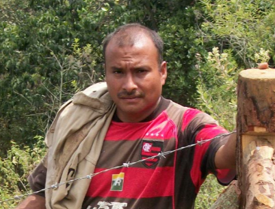
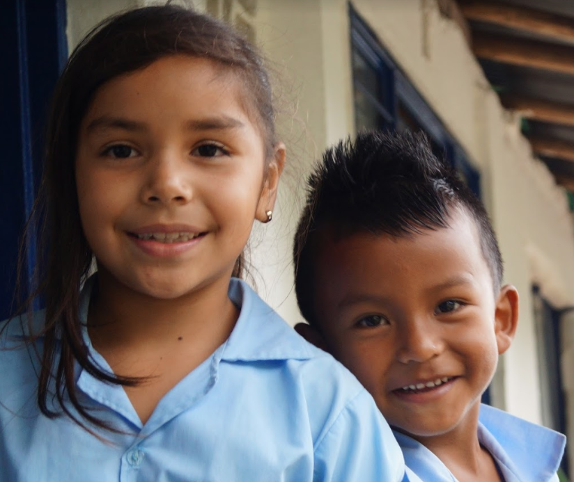
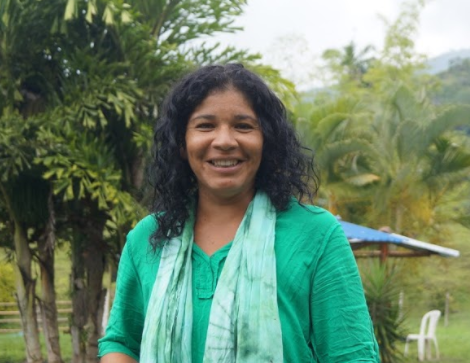
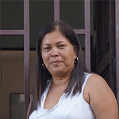

OLD STUFF

Guido Prado

{kind=link}
{kind=link}
{kind=link}
{kind=link}
{kind=link}
{kind=link}
{kind=link}

Humberto Prieto

Otoniel Ocuyame

While he perceives that having springs in his property secures his water supply, he is also concerned about water security downstream. “I may always have water in my field because it emerges here, but I am conscious that water is needed downstream, not only for communities but also for other crops and livestock.”
Gustavo Trujillo

Ediberto Perea

Diego Marquez

Oscar Andres

Indigenous Community

Immersed in the cloudiness of the forests, and next to a creek is Mercedes Abrego, one of Asobolo school-partners that teaches students about conservation. Students have learned to love nature, “the students don’t bring slingshots anymore,” which they used to kill birds, teacher Fabian, says, reflecting on students previous hostile attitudes towards wildlife.
School

“We have to take advantage of the beauty we have here in Colombia; we have springs, forests, native species that other ranches no longer have,” Naomi says, pointing to her conservation values and her personal responsibility to protect nature in her property.
Naomi Beltran

Amalia’s functions are diverse but, crucially important, has been Amalia’s dedication to weave water conservation with meaningful relationships with the community. “We can have all the money of the world, but, if the community does not want to work, the water fund would not exist.”
Dr. Amalia Morales